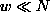
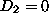
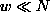
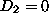
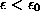
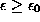
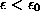
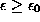
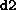
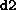

The literature on the correct and spurious estimation of the correlation
dimension is huge and this is certainly not the place to repeat all the
arguments. The relevant caveats and misconceptions are reviewed for example in
Refs. [75, 11, 76, 2]. The most prominent precaution
is to exclude temporally correlated points from the pair counting by the so
called Theiler window w [75]. In order to become a consistent
estimator of the correlation integral (from which the dimension is
derived) the correlation sum should cover a random sample of points drawn
independently according to the invariant measure on the attractor. Successive
elements of a time series are not usually independent. In particular for highly
sampled flow data subsequent delay vectors are highly correlated. Theiler
suggested to remove this spurious effect by simply ignoring all pairs of points
in Eq.( ) whose time indices differ by less than w, where w
should be chosen generously. With O(N²) pairs available, the loss of O(N)
pairs is not dramatic as long as . At the very least, pairs with j=k
have to be excluded [77], since otherwise the strong bias to
, the mathematically correct value for a finite set of points, reduces
the scaling range drastically. Choosing w, the first zero of the
auto-correlation function, sometimes even the decay time of the autocorrelation
function, are not large enough since they reflect only overall linear
correlations [75, 76]. The space-time-separation plot
(Sec.
) whose time indices differ by less than w, where w
should be chosen generously. With O(N²) pairs available, the loss of O(N)
pairs is not dramatic as long as . At the very least, pairs with j=k
have to be excluded [77], since otherwise the strong bias to
, the mathematically correct value for a finite set of points, reduces
the scaling range drastically. Choosing w, the first zero of the
auto-correlation function, sometimes even the decay time of the autocorrelation
function, are not large enough since they reflect only overall linear
correlations [75, 76]. The space-time-separation plot
(Sec.  ) provides a good means of determining a sufficient value
for w, as discussed for example in [41, 2]. In some cases,
notably processes with inverse power law spectra, inspection requires w to be
of the order of the length of the time series. This indicates that the data
does not sample an invariant attractor sufficiently and the estimation of
invariants like
) provides a good means of determining a sufficient value
for w, as discussed for example in [41, 2]. In some cases,
notably processes with inverse power law spectra, inspection requires w to be
of the order of the length of the time series. This indicates that the data
does not sample an invariant attractor sufficiently and the estimation of
invariants like  or Lyapunov exponents should be abandoned.
or Lyapunov exponents should be abandoned.
Parameters in the routines d2 and
c2naive are as usual the
embedding parameters m and  , the time delay, and the embedding
dimension, as well as the Theiler window.
, the time delay, and the embedding
dimension, as well as the Theiler window.
Fast implementation of the correlation sum have been proposed by several
authors. At small length scales, the computation of pairs can be done in
O(NlogN) or even O(N) time rather than
O(N²) without loosing any of
the precious pairs, see Ref. [20]. However, for intermediate size data
sets we also need the correlation sum at intermediate length scales where
neighbor searching becomes expensive. Many authors have tried to limit the use
of computational resources by restricting one of the sums in
Eq.( ) to a fraction of the available points. By this practice,
however, one looses valuable statistics at the small length scales where points
are so scarce anyway that all pairs are needed for stable
results. In [62], buth approaches were combined for the first time by
using fast neighbor search for  and restricting the sum
for . The TISEAN implementation
d2
goes one step further and selects the range for the sums individually for each
length scale to be processed. This turns out to give a major improvement in
speed. The user can specify a desired number of pairs which seems large enough
for a stable estimation of
) to a fraction of the available points. By this practice,
however, one looses valuable statistics at the small length scales where points
are so scarce anyway that all pairs are needed for stable
results. In [62], buth approaches were combined for the first time by
using fast neighbor search for  and restricting the sum
for . The TISEAN implementation
d2
goes one step further and selects the range for the sums individually for each
length scale to be processed. This turns out to give a major improvement in
speed. The user can specify a desired number of pairs which seems large enough
for a stable estimation of  , typically 1000 pairs will
suffice. Then the sums are extended to a range which guarantees that number of
pairs, or, if this cannot be achieved, to the whole time series. At the largest
length scales, this range may be rather small and the user may choose to give a
minimal number of reference points to ensure a representative average.
In the program
, rather than restricting the range of the
sums, only a randomly selected subset is used. The randomization however
requires a sophisticated program structure in order to avoid an
overhead in computation time.
, typically 1000 pairs will
suffice. Then the sums are extended to a range which guarantees that number of
pairs, or, if this cannot be achieved, to the whole time series. At the largest
length scales, this range may be rather small and the user may choose to give a
minimal number of reference points to ensure a representative average.
In the program
, rather than restricting the range of the
sums, only a randomly selected subset is used. The randomization however
requires a sophisticated program structure in order to avoid an
overhead in computation time.